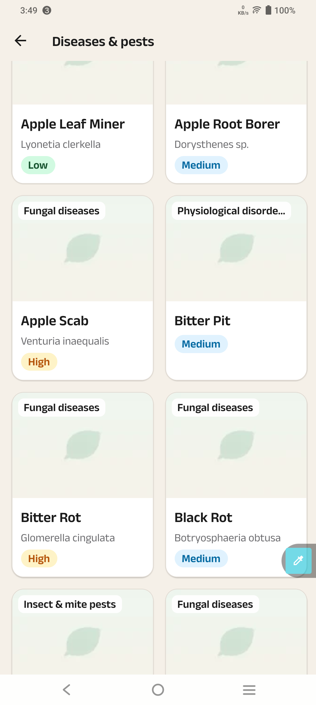
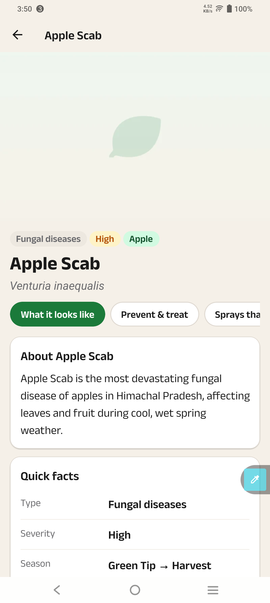
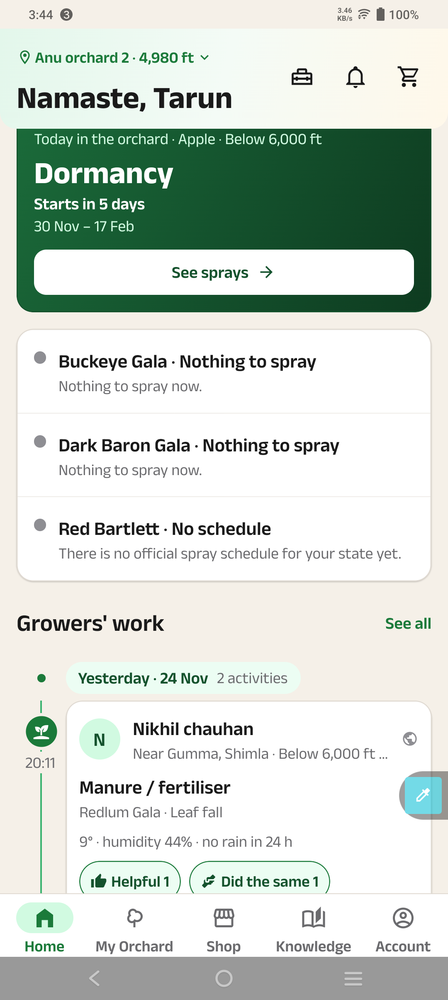
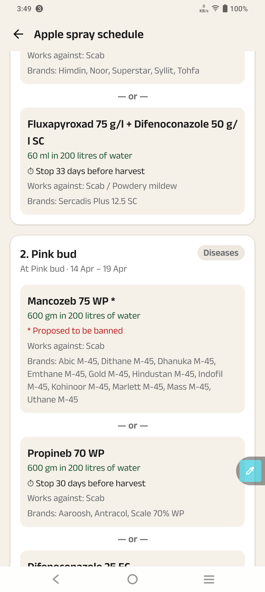
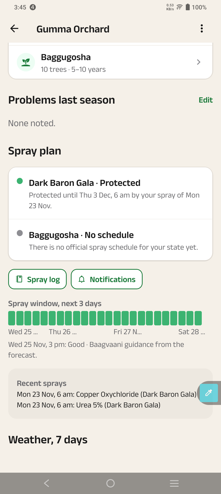
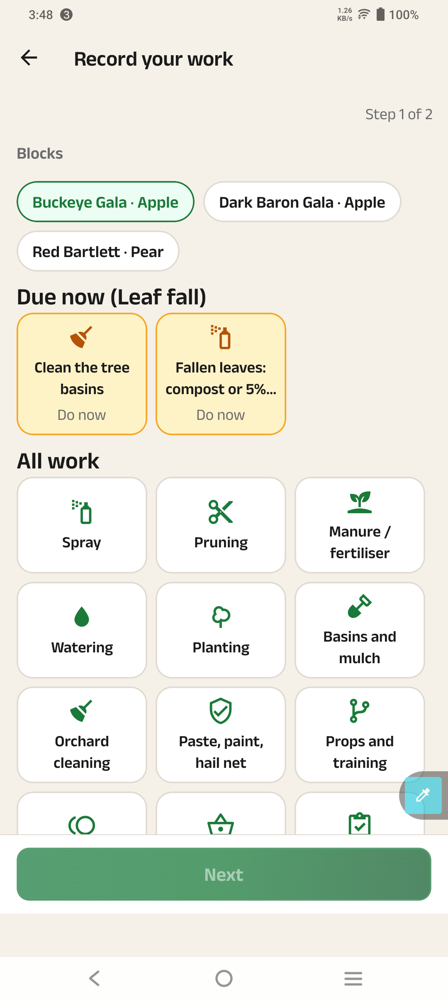
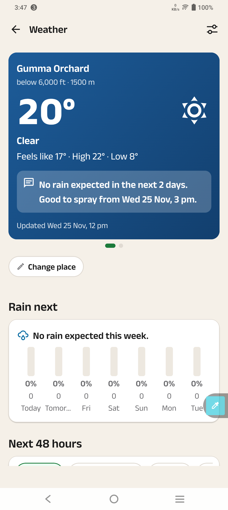
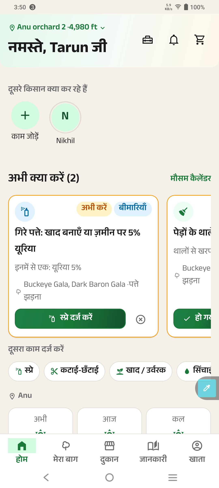

Baagicha app: design report card
25 Nov 2026 · the installed build on Tarun's phone (Realme, 1080 × 2408), English and Hindi · compared with 9 apps' Play Store screenshots (see the gallery). Design only: nothing here changes what the app does.
Honest verdict: tidy and consistent, but plain, text-heavy and picture-poor.
The design system you built in October works: one font, one green, the same radius everywhere, Hindi renders well. That puts us above most Indian farming apps. But next to the apps people admire, Baagicha reads like a well-organised document, not a product. Almost everything is text in white boxes on beige. There are no real photos where growers need them most (diseases), no visual hero on Home, and long screens of small grey text. It looks correct; it doesn't look loved.
Progress since the first review
Updated 25 Nov 2026. The first review below stays as it was, for comparison. Average of the 12 areas: 5.8 then, 7.3 now.
| Area | Then | Now | Status | Done so far | Still to do |
|---|---|---|---|---|---|
| Imagery and illustration | 3 | 3 | Waiting for photos | – | Photos of diseases, pests, stages and varieties: Tarun is collecting them; the import script (bin/import-image-library.php) is ready. |
| Layout and density | 4.5 | 7.5 ▲ | Done | Home leads with one Today tile and two small tiles; the orchard page has a stat row and three tabs (This season · Blocks · Orchard Guide) instead of ~4 screens; the spray schedule is one card per stage; no big empty pictures where a photo is missing; no card shadows. | – |
| Copy polish and states | 5 | 7.5 ▲ | Done | Plurals in the app and on the server ('1 activity', '1 shop'); no '(s)' anywhere; cut-off labels fixed; Hindi ' · ' spacing; the dry-week rain card is one line; dates and units in the screen's language. | – |
| Motion and effects | 5 | 7.5 ▲ | Done | A 'saved' moment (a check springs in, a ring spreads) after a spray, posted work or a job marked done; tab icons pop with a small bounce; both off with the phone's 'remove animations'. | – |
| Colour and theme | 6 | 8 ▲ | Done | Severity: high and critical red, medium gold; colours live in the theme; a second colour, Himalayan sky (Tarun's pick), for what is new or due now; dark mode (Light / Dark / Same as phone) with a checked dark palette; a frosted floating tab bar. | – |
| Cards and surfaces | 6 | 8 ▲ | Done | Cards are white with a thin border and no shadow; no box inside a box (spray schedule, treatments, plan options, season lists, forecast tiles); the CardRows part. | – |
| Typography | 6.5 | 7.5 ▲ | Done | Big-number Stat style (altitude, trees, blocks, temperature); bigger stage names; the dose as a green headline; inner screen titles at 20 px in every header. | – |
| Buttons and controls | 6.5 | 7.5 ▲ | Done | Quiet post buttons (icons with counts); one Spray log button on the orchard page; bigger tap areas on small chips and pills; a disabled button is now flat grey (or a grey outline) instead of a paler green. | – |
| Navigation | 6.5 | 7.5 ▲ | Done | The selected-tab pill is the same round shape on every tab; one header look for every stack (useStackHeader) with clearer titles. The Shop tab stays (Tarun's choice); collapsing large titles exist only on iPhone, so Android gets the clearer fixed title. | – |
| Forms and input | 6.5 | 7.5 ▲ | Done | Record work: 'Step 1 of 2' with a bar per step; every section spaced (a layout bug gave steps no gaps, also fixed in checkout); suggested job titles take 3 lines. Checked on the phone. | The very longest job titles still cut after 3 lines. |
| Data and charts | 6.5 | 7.5 ▲ | Done | A dry week shows one line instead of seven empty 0% bars; forecast days without grey tiles; the spray window leads with 'Best spray time: …' above its strip. | – |
| Hindi | 7 | 8.5 ▲ | Done | Separators keep their space; plural words in Hindi too; dates ('30 नवंबर – 17 फ़रवरी', '18 फ़रवरी से शुरू') and units (फुट, मीटर) in Hindi in the app, the API and the website. | Variety and orchard names stay as growers and the data write them (English names are proper names). |
How the references score (for scale)
My rating of each app's design from its screenshots; the bar we are measuring against.
| App | Score | What makes it good |
|---|---|---|
| Airbnb | 9.5 | Photo-first, huge white space, one search pill, chips with small 3D icons. Calm cream base, almost like ours, but the photos carry it. |
| Calm | 9 | Full-bleed nature photos, a blue gradient mood, translucent cards over images. |
| AllTrails / Strava | 8.5 | Outdoor data done beautifully: photo cards, stats as big numbers with tiny labels, clean maps and charts. |
| Today Weather | 8 | Photo backgrounds, dark mode, compact hourly strips, widgets. |
| Zepto / Swiggy | 8 | Picture grids for categories, bold brand colour, very fast to scan, made for Indian phones. |
| PictureThis / Plantix | 7.5 | Our closest peers: real plant and disease photos everywhere, simple tool cards, mint backgrounds. |
| Baagicha | 5.5 | Consistent and readable, but almost no imagery, too much text, weak hierarchy. |
First review, area by area (25 Nov 2026, before the changes)
| Area | Score | What I saw (brutally) |
|---|---|---|
| Imagery and illustration | 3 | Biggest gap. Every disease and pest has the same pale leaf placeholder instead of a photo, on the list and the page: a grower can't recognise scab from it. Plantix and PictureThis are built on photos. Home has no image at all above the fold; stage tiles and weather use thin outline icons. The blog photos and the Shop sketch show we can do it. |
| Layout and density | 4.5 | The spray schedule is a wall of text: grey boxes inside white boxes inside beige, each with 5 lines of small print and long brand lists. The orchard page is 4 screens long with 9 sections of equal weight. Home stacks 7 sections. The leaders put one idea per screen and push the rest behind a tap. |
| Copy polish and states | 5 | "1 activities", "5 job(s)", "14 stage(s)": these look unfinished. Labels cut off: "Wed 25 …", "Fri 27 N…", "Mon 30 N…", blog titles "Securing Next Year's Yield: The C…". On Hindi screens the dates and variety names stay English ("30 Nov – 17 Feb") and separators lose their space ("Gala ·अभी"). The rain card shows seven empty 0% bars instead of one line "No rain this week". |
| Motion and effects | 5 | Subtle fade-ins and press-scale only. No depth: no blur, no glass, no springy expressive moments (Material 3 Expressive's whole idea), no celebration when a spray is saved. Right for cheap phones, but it feels flat. A little goes a long way: one glassy header, a check animation, a bouncing tab icon. |
| Colour and theme | 6 | Green on cream is calm and fits the orchard. But it's one-note: green buttons, green links, green pills, green icons, green cards, so nothing stands out. Accent colours are used only for little pills (gold "Do now", blue "Diseases", red "Must do", which fight each other on one card). Weather tiles are grey on grey. No dark mode. "High" severity is shown in gold, not red. |
| Cards and surfaces | 6 | Same 16 px radius everywhere, good. But cards have a border and a shadow, and cards sit inside cards (beige box in white card in beige screen), which makes screens look boxed-in. The leaders use either a soft shadow or a hairline, and almost never nest. |
| Typography | 6.5 | Anek Latin and Devanagari are a good pair and Hindi line heights don't clip. The problem is hierarchy: the season card mixes 6 sizes and weights in one green box; inner screen titles are small (17 px) while tab titles are big (26 px); numbers that matter (20°, Day 61 of 65, 60 trees) are not given the big-number treatment Strava and AllTrails use. |
| Buttons and controls | 6.5 | The primary green gradient button is clear. But each post has five outlined pills of equal weight (Helpful, Did the same, Good work, comments, share): noise. "Spray log" appears twice on the orchard page. The disabled "Next" is a pale gradient that still looks pressable. |
| Navigation | 6.5 | Five clear tabs, but the selected tab's highlight changes shape (round pill on Home, square block on My Orchard). Inner headers are plain text bars without the large collapsing title that Material 3 uses. The Shop tab takes a full slot while the shop is closed. |
| Forms and input | 6.5 | "Record your work" is the best screen: a big icon tile grid, picture-first like Zepto's categories, easy for growers. Weak spots: "Step 1 of 2" floats alone at the right; section titles have no space above them; the chips wrap untidily. |
| Data and charts | 6.5 | The weather screen is the second-best screen: a blue sky card, a clean 14-day list with temperature bars, detail tiles. The spray window strip on the orchard page is a row of identical green blocks with cut-off dates; it says nothing a sentence doesn't. |
| Hindi | 7 | Renders cleanly, wraps well, tabs fit. Mixed scripts (English names, dates, "ft") and missing spaces are the main issues. |
What we do well (keep it)
- One design system, applied everywhere: same radius, font and green. Most farming apps don't have this.
- The record-work tile grid and the stage picker tiles: big, tappable, pictorial.
- The weather screen's sky card and 14-day list.
- The Knowledge tab: search on top, grouped rows with counts, fruit photo cards.
- Hindi is a first-class citizen, not an afterthought.
Our screens next to the references
Diseases: placeholder leaves vs real photos




Home: text boxes vs one strong hero




Spray schedule: wall of text vs scannable cards




Orchard page: 9 equal sections vs clear hierarchy




Best screens we have



2026 design patterns worth taking (and ones to skip)
Take: Material 3 Expressive
Android's 2025–26 look: bigger and bolder type for key numbers, more shape variety (pill, squircle, scalloped badges), springy motion, larger touch targets, stronger colour contrast between primary and secondary actions. It suits growers with big thumbs and bright sunlight.
Take: photo-first cards
Airbnb, AllTrails, PictureThis, Plantix: the picture is the card and the text sits under or over it. For us: disease photos, stage photos (green tip, pink bud, petal fall), the grower's own orchard photo on Home.
Take: big-number stats
Strava and AllTrails show one number large and a small label under it. For us: 20°, Day 61 of 65, 60 trees, "Protected until 3 Dec".
Take: bento tiles
Uneven grids of tiles with one bigger "hero" tile. For us: Home could be a bento of Today's job (big), Weather, Season stage, Spray log.
Use sparingly: glass (glassmorphism / Liquid Glass)
Translucent, blurred panels over photos (Calm, Apple's Liquid Glass). Beautiful, but blur is costly on a 2018 Realme. Use it in one or two places only: the tab bar over content, the header over the sky card, a sheet over a photo. Never for body text.
Skip: neumorphism and heavy dark-only UIs
Soft extruded shapes look nice in screenshots but have poor contrast outdoors. A dark mode is worth adding later; a dark-only design is not right for orchards in sunlight.
Top 10 design changes, biggest win first
- Waiting for photos Real photos for diseases, pests and stages (server side: picture per item; app: photo hero and photo cards). Moves Imagery from 3 to 7 on its own.
- Done Spray schedule redesign: one card per spray with the chemical name and dose as the headline, "stop N days before harvest" as a chip, brands folded behind "Show brands", no nested boxes.
- Done Home hero: one big bento tile for "Today" (stage, weather, top job) with the orchard photo or a stage illustration, then the rest smaller.
- Done Fix the copy polish: plurals ("1 activity", "5 jobs"), no "(s)", Hindi dates and spaces, labels that never cut off.
- Done Flatten the surfaces: no cards inside cards; shadow or border, not both; more white space between sections.
- Done Big-number type style for the few numbers that matter, and fewer sizes per card (title, one line, one action).
- Done Second colour: keep green for actions, give alerts a real red, and use warm gold or sky blue as a true accent, not only in tiny pills.
- Done Quieter social actions: icons with counts in one row (like Strava), not five outlined pills.
- Partly done Expressive motion moments: a check-mark burst when a spray is saved, springy tab icons, a glassy tab bar.
- Done Large collapsing headers on inner screens and one consistent selected-tab pill.
Next step
Look through the gallery, delete the pictures you don't like, and tell me which of the 10 changes to start with.
I'll then write a short redesign plan into baagicha_mobile/docs/redesign/ for your OK before touching any screen.
Not counted: the small blue dropper button on the right edge of every screenshot belongs to another app on the phone, not Baagicha. The installed build may be a few days older than the code; the overall look is the same.